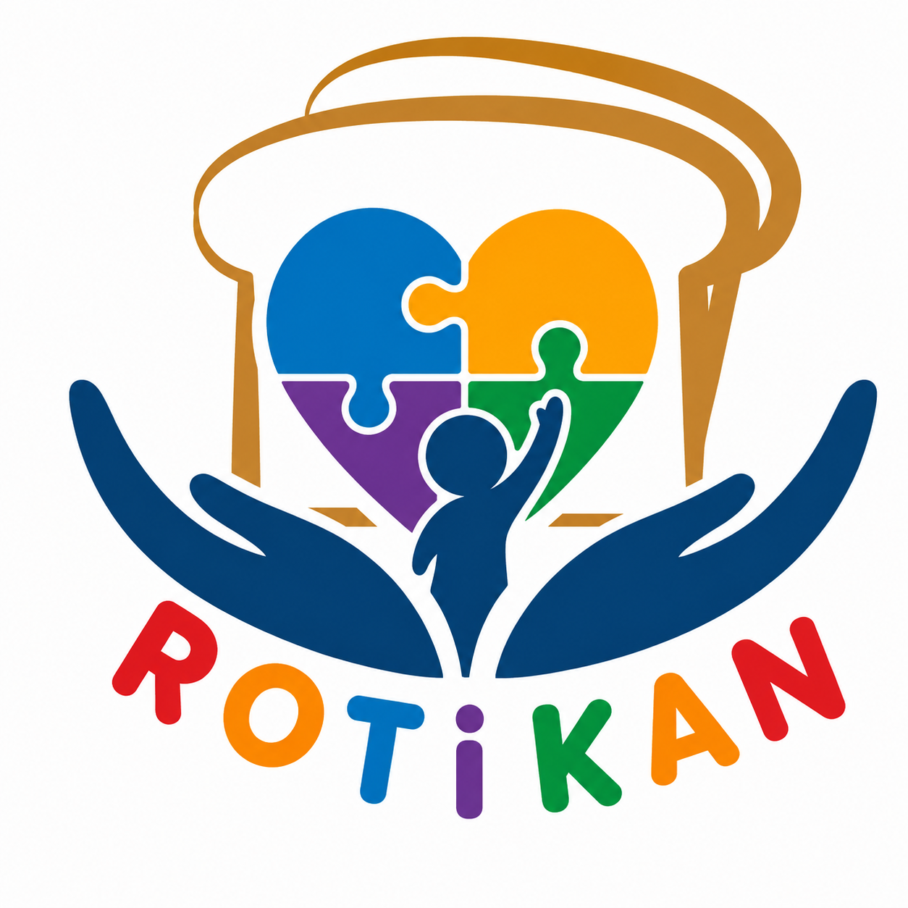

ROTIKAN
Roti Untuk Pendidikan Autisme
Program perniagaan sosial yang menjana dana berterusan melalui jualan roti untuk menyokong pendidikan, rawatan dan keperluan kanak-kanak autisme di Sabah.

Jualan harian yang memberi sokongan berterusan
ROTIKAN ialah inisiatif perniagaan sosial PKPIM yang menggunakan hasil keuntungan jualan roti untuk membiayai Tabung Pendidikan Autisme PKPIM.
Program ini diwujudkan supaya sokongan kepada kanak-kanak autisme tidak hanya bergantung kepada derma sekali-sekala, tetapi mempunyai sumber dana yang lebih berterusan melalui jualan harian.
Menyokong kanak-kanak autisme dan keluarga mereka di Sabah
Dokumen program PKPIM mengenal pasti keperluan yang semakin meningkat terhadap pendidikan, terapi dan sokongan autisme di Sabah.
Tabung ROTIKAN
Setiap RM1 keuntungan daripada satu roti disalurkan kepada Tabung Pendidikan Autisme PKPIM.
Cari ROTIKAN berhampiran anda
Lokasi stesen jualan
Dokumen program menetapkan sasaran 250 stesen di seluruh Sabah dan Labuan, tetapi tidak menyenaraikan alamat stesen jualan yang telah beroperasi.
Setiap Gigitan Roti, Menyumbang Pendidikan Anak Autisme.
Dengan membeli ROTIKAN, anda membantu mewujudkan sumber dana berterusan untuk pendidikan dan sokongan autisme.